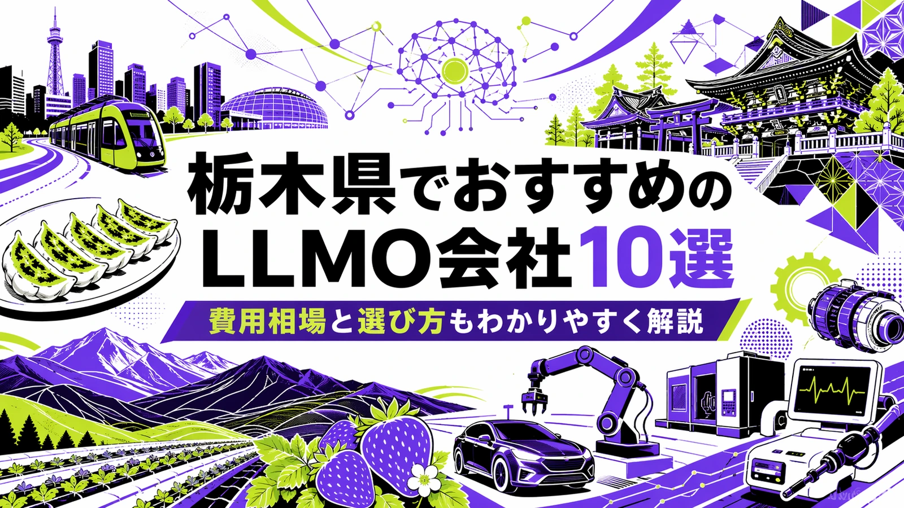
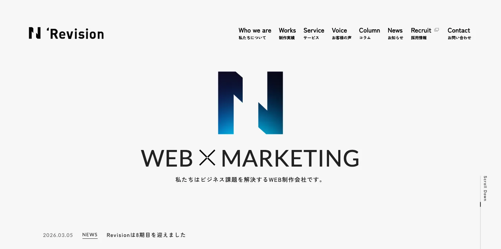
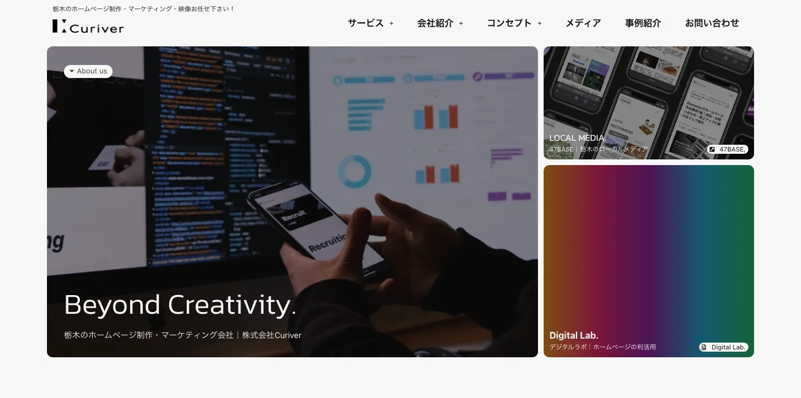
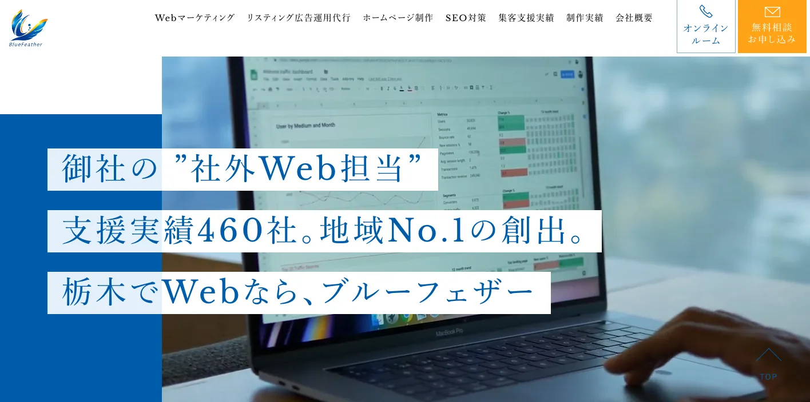
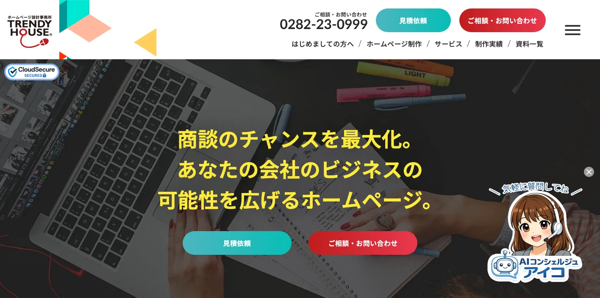
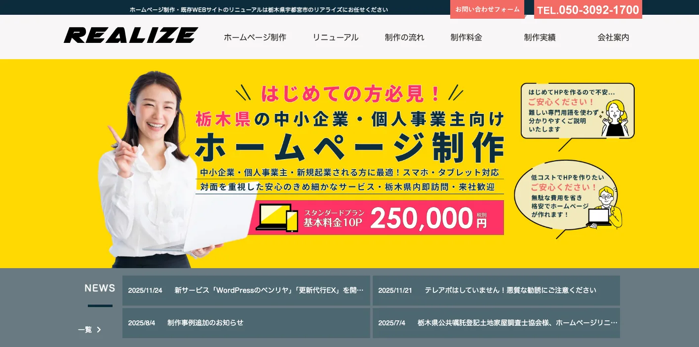
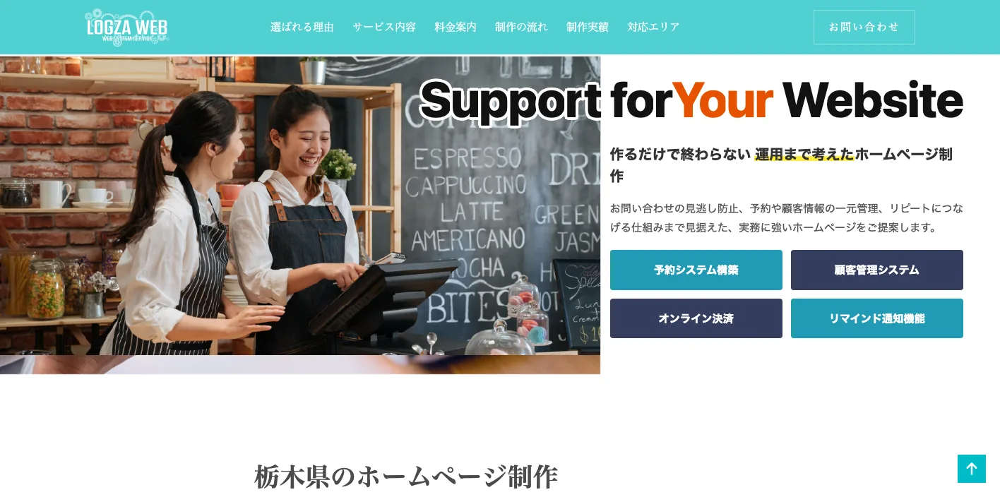
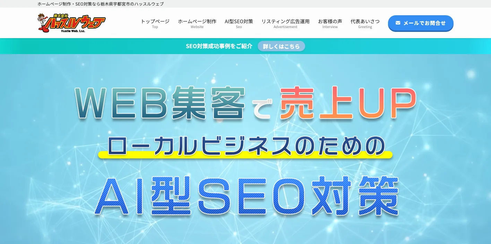
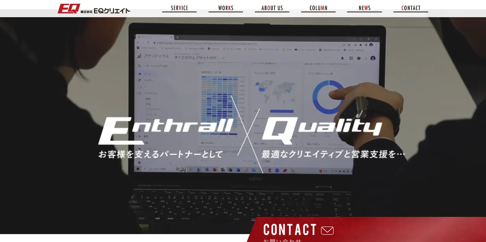
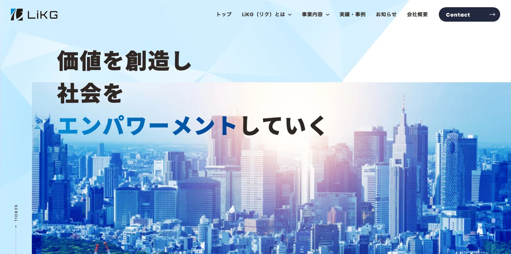

栃木県でおすすめのLLMO会社10選｜費用相場と選び方もわかりやすく解説

栃木県でLLMO会社を選ぶときは、単に「宇都宮のWeb制作会社」「栃木県のSEO会社」だけで探すと、必要な支援がずれやすいです。宇都宮市の生活サービス・行政商圏、小山市・栃木市・佐野市・足利市の県南・両毛商圏、日光・那須の観光商圏、芳賀・真岡・上三川の製造業、鹿沼・大田原・那須塩原の地域産業では、AI検索で聞かれる質問の形が違うからです。
栃木県公式の毎月人口推計月報では、2026年3月1日現在の総人口は1,862,483人、世帯数は831,379世帯です。令和6年の観光客入込数は89,973千人、観光客宿泊数は8,304千人でした。県の「多様な工業製品」ページでは、製造品出荷額等が令和5年で全国第13位、県内総生産に占める製造業の割合が令和4年度で全国第2位とされています。
つまり栃木県のLLMOでは、地域名を入れた記事を増やすだけでは足りません。観光、製造、医療福祉、食品、採用、地域店舗、BtoB商談まで、ユーザーとAIが判断に使う一次情報を整理することが重要です。基本から確認したい方はLLMO対策の基礎記事、近隣県も見たい方は茨城県の比較記事や福島県の比較記事も参考になります。自社サイトの現状を先に見たい場合は無料LLMO診断から始めると判断しやすいです。
目次

栃木県でおすすめのLLMO会社10選
今回は、栃木県内に拠点があり、Web制作、SEO、Webマーケティング、広告、採用サイト、LP、運用改善などの公開情報を確認しやすい会社を中心に、LLMOを明示している全国対応会社も補完的に加えました。栃木県内でLLMO専業を前面に出す会社はまだ多くありません。そのため、AI検索対策そのものだけでなく、サイト構造、FAQ、地域ページ、事例、写真、採用、更新体制まで支援できる会社を比較対象にしています。
栃木県では、宇都宮の店舗・士業・医療、県南の製造・物流、日光・那須・足利の観光、真岡・芳賀・上三川のものづくり、鹿沼・大田原・那須塩原の地域産業で、必要な情報が変わります。まずは表で向いている企業を確認し、その後に各社の特徴を見てください。
| 会社名 | 拠点性 | 向いている企業 | 支援の軸 |
|---|---|---|---|
| 株式会社Revision | 宇都宮市 | Web制作・広告・SEO・SNSを一体で進めたい企業 | Web制作・SEO・広告・SNS・マーケティング |
| 株式会社Curiver | 宇都宮市 | 栃木特化の集客、採用、地域PRを強めたい企業 | Web制作・SEO・記事・動画・ローカルメディア |
| ブルーフェザー株式会社 | 宇都宮市 | 地方集客に合わせたWeb戦略とデザインを重視する企業 | Web制作・広告・Webマーケティング戦略 |
| 有限会社トレンディハウス | 栃木市 | 県南・両毛でWeb、SEO、採用、販促をまとめたい企業 | ホームページ制作・SEO・MA・写真動画・補助金 |
| リアライズ | 宇都宮市 | 低コストでAI活用、WordPress、SEOを相談したい企業 | Web制作・AI活用・WordPress・SEO |
| LOGZAWEB | 栃木県内対応 | 小規模事業者で予約・顧客管理・運用まで整えたい企業 | Web制作・保守・SEO・AI検索対策・業務効率化 |
| ハッスルウェブ | 宇都宮市 | ローカルビジネスのSEOと集客を重視する店舗・医院 | ホームページ制作・AI型SEO・広告運用 |
| 株式会社EQクリエイト | 小山市 | LP、広告、動画、MEO、販促物を一体で進めたい企業 | Web制作・LP・Web広告・MEO・動画 |
| 株式会社LiKG | 全国対応 | LLMO診断から記事制作まで任せたい企業 | LLMO診断・LLMO×SEO伴走・記事制作 |
| 株式会社ジオコード | 全国対応 | SEOとAI最適化を実装込みで進めたい企業 | SEO・コンテンツ・AIO/LLMO・実装改善 |
株式会社AIMAは栃木本社の会社ではありませんが、全国対応でLLMO支援を提供しています。月額5万円のLLMO支援は初期費用なし・1ヶ月単位で始められ、質問設計、記事制作、引用チェックに絞って実務を進められます。宇都宮、県南、両毛、日光・那須、芳賀・真岡、県北のように検索文脈が分かれる場合も、まず無料LLMO診断で優先順位を確認できます。
1. 株式会社Revision

株式会社Revisionは、宇都宮市錦に本社を置くWeb制作・Webマーケティング会社です。公式サイトでは、Web制作、広告運用、SNS・マーケティング、MEO、採用サイト、SEOやAI時代の集客に関する情報発信を確認できます。宇都宮本社に加え東京オフィスもあり、地域案件と広域案件の両方を見やすい会社です。
栃木県の企業では、制作だけでなく、広告、SNS、Googleビジネスプロフィール、採用情報まで合わせて運用する場面が多くなります。Revisionは、宇都宮を基点に、Web制作と集客施策をまとめて設計したい企業に向いています。
参考：株式会社Revision｜栃木県のWeb制作・Webマーケティング
2. 株式会社Curiver

株式会社Curiverは、宇都宮市中岡本町のホームページ制作・マーケティング会社です。公式サイトでは、中小・零細企業のホームページ制作、Webデザイン、運用、SEO対策、記事制作、動画、写真撮影、採用PR、通販サイト運営、ローカルメディア「47BASE」の運営などを案内しています。
栃木県では、商品やサービスの良さを「地域の人に伝わる言葉」に変える力が成果を左右します。Curiverは、栃木に特化した情報発信、採用PR、地域メディア、記事や動画を組み合わせたい企業に比較しやすい会社です。
参考：株式会社Curiver｜栃木のホームページ制作・マーケティング会社
3. ブルーフェザー株式会社

ブルーフェザー株式会社は、栃木でWeb集客やホームページ制作を支援する会社です。公式サイトでは、地方のWeb集客には地方ならではのノウハウがあるという考え方を示し、Webマーケティング戦略とデザインの両面から、売上向上、問い合わせ数増加、採用強化につなげるホームページ制作を案内しています。
LLMOでは、きれいなページだけではなく、誰に、何を、どの順番で説明するかが重要です。ブルーフェザーは、宇都宮周辺の企業が、地方商圏に合わせた導線設計とデザインを重視したい場合に向いています。
4. 有限会社トレンディハウス

有限会社トレンディハウスは、栃木市境町のホームページ制作会社です。公式サイトでは、ホームページ制作、マーケティングオートメーション、オンラインショップ、補助金申請サポート、写真撮影・動画制作、サーバー・ドメイン管理、SEO、Web担当者支援などを案内しています。制作実績には宇都宮市、栃木市、小山市など県内案件が並びます。
県南・両毛エリアでは、商談獲得、採用、EC、医療福祉、教育、店舗、製造など、Webに載せる情報が幅広くなりやすいです。トレンディハウスは、Webだけでなく、販促、採用、写真動画、補助金活用までまとめて相談したい企業に向いています。
参考：有限会社トレンディハウス｜栃木県のホームページ制作会社
5. リアライズ

リアライズは、宇都宮市のホームページ制作会社です。公式サイトでは、ホームページ制作から保守管理まで外注なしの社内一貫体制を掲げ、ChatGPTをはじめとした生成AI技術の活用、リニューアル、求人サイト、スマホ対応、ランディングページ、楽天ショップ、BASE、SEO対策などを案内しています。
小規模事業者や初めてWebに投資する企業では、難しい専門用語よりも、制作費、更新方法、公開後の修正、SEOの基本を分かりやすく説明してもらえるかが大事です。リアライズは、AI活用と低コスト制作を入口に、WordPressやSEOも相談したい企業に向いています。
6. LOGZAWEB

LOGZAWEBは、栃木県内全域対応を掲げるホームページ制作サービスです。公式サイトでは、最短5日で公開、1ページ単位の修正料金、月5,000円からの保守・運用、予約システム、顧客管理、オンライン決済、リマインド通知、LINE通知、Googleビジネス、SEO対策、AI検索対策などを案内しています。
栃木県内の店舗や小規模事業者では、Webサイトを作って終わりではなく、予約、問い合わせ、再来店、採用、Googleマップまでつなげる必要があります。LOGZAWEBは、制作費を抑えながら、運用と業務効率化まで整えたい会社に比較しやすいです。
7. ハッスルウェブ

ハッスルウェブは、宇都宮のホームページ制作・SEO対策会社です。公式サイトでは、ローカルビジネス向けのWeb集客支援、AIを組み込んだSEO対策、リスティング広告運用、ホームページ制作、WordPress導入、3C分析、文章コンテンツ、公開後のアフターフォローなどを案内しています。
医療、士業、店舗、教室、美容、修理、住宅など、栃木県内のローカルビジネスでは「地域名＋悩み」で見つけられることが重要です。ハッスルウェブは、SEOを強く意識したホームページ制作を相談したい店舗・医院・小規模企業に向いています。
8. 株式会社EQクリエイト

株式会社EQクリエイトは、小山市城東に拠点を置く総合広告会社です。公式サイトでは、チラシデザイン、ホームページ制作、動画制作、MEO対策、SEO対策、LP制作、Web広告、Webマーケティング、マンガ動画、サジェスト対策などを案内しています。LP制作では、データ計測、広告配信、分析、ABテスト、改善までの流れも示されています。
小山市、下野市、栃木市、佐野市、足利市など県南・両毛では、店舗集客、採用、イベント、販促物、動画、広告が一体になりやすいです。EQクリエイトは、Webサイトだけでなく、LP、広告、動画、MEOまで合わせて成果を作りたい企業に向いています。
9. 株式会社LiKG

株式会社LiKGは、LLMOコンサルティングを明確に打ち出している全国対応会社です。公式ページでは、LLMO診断、LLMO×SEOコンサルティング、EEAT強化記事制作を案内し、AI OverviewやChatGPTでの露出状況調査、20項目診断、改善レポート、構造化データ改善指示、記事構成作成などを説明しています。
栃木県の企業でも、すでにサイトや記事があり、AI検索にどう出ているかを診断したい場合に向いています。製造、観光、食品、医療福祉、採用、BtoBの一次情報を持っているのにAI検索で拾われていない会社は、診断から始める価値があります。
10. 株式会社ジオコード

株式会社ジオコードは、SEO対策、コンテンツマーケティング、Web制作、Web広告、AIO・LLMOなどAI最適化まで案内している全国対応会社です。公式サイトでは、SEO・コンテンツ・オウンドメディアからAIO・LLMOなどAI最適化まで支援するサービス構成を確認できます。
栃木県内でも、県外商圏を持つBtoB企業、EC企業、採用を強める企業では、地場制作会社だけでなく全国のSEO会社も比較対象になります。ジオコードは、SEOとLLMOを分けず、分析から実装まで任せたい企業に向いています。
栃木県のLLMO会社を比較する際のポイント
栃木県でLLMO会社を比較するときは、会社名の知名度よりも、栃木県の地域構造と産業の違いをページ設計に落とし込めるかを見てください。ここでは、会社一覧とは役割を分け、栃木県ならではの比較軸だけを整理します。
宇都宮中心の生活商圏と、県南・両毛の広域商圏を分けられるか
栃木県は、宇都宮市だけで完結する県ではありません。人口月報では2026年3月1日現在、宇都宮市は510,182人、県全体は1,862,483人です。小山市、栃木市、足利市、佐野市、鹿沼市、日光市、真岡市、大田原市、那須塩原市など、それぞれの生活圏や移動導線が違います。
LLMO会社には、「栃木県」で一括りにせず、宇都宮の単一商圏、県南・両毛の広域商圏、日光・那須の観光商圏、芳賀・真岡・上三川の製造業商圏を分けて設計できるかを確認しましょう。
日光・那須・足利・益子の観光質問を具体化できるか
栃木県の令和6年観光客入込数は89,973千人、宿泊数は8,304千人です。観光では、日光東照宮、鬼怒川、那須高原、あしかがフラワーパーク、佐野、益子、宇都宮餃子、いちご狩りなど、目的地ごとに質問が変わります。
AI検索では「日光は何月がよいか」「那須で子連れに向く宿」「あしかがフラワーパークの混雑」「益子焼の体験」「宇都宮餃子と周遊」のように聞かれます。観光・宿泊・飲食の企業は、季節、アクセス、所要時間、駐車場、予約、雨天、周辺施設、FAQをセットで整理できる会社を選びましょう。
参考：栃木県｜令和6年栃木県観光客入込数・宿泊数推定調査結果
自動車・航空宇宙・医療機器など、ものづくり情報を説明できるか
栃木県は「ものづくり県」として、自動車、航空宇宙、医療機器、食品、産業用機械などの文脈が強い地域です。県公式ページでは、製造品出荷額等が全国第13位、県内総生産に占める製造業の割合が全国第2位とされています。日産、ホンダ、SUBARU、キヤノンメディカルシステムズなどの拠点も紹介されています。
BtoB企業のLLMOでは、会社概要だけでは足りません。設備、加工範囲、技術領域、納入業界、品質管理、認証、図面対応、量産可否、採用情報まで、問い合わせ前に知りたい情報をページ化できるかが重要です。
いちご・食品・農産品は、商品情報と配送条件まで整理できるか
栃木県は、いちごの生産量日本一として知られています。県公式サイトでも、昭和43年から半世紀以上にわたり生産量が日本一と紹介されています。いちごだけでなく、観光農園、加工食品、ギフト、菓子、畜産、地場産品、ECとの相性も高い地域です。
食品・EC・観光農園のLLMOでは、品種、旬、出荷時期、保存方法、配送温度、ギフト対応、法人取引、予約条件、キャンセル、雨天時対応まで整理しましょう。AIが比較回答を作るときに、商品名だけでなく購入条件まで読める状態にしておく必要があります。
LRT・高速道路・北関東連携など、移動導線を扱えるか
栃木県では、宇都宮ライトライン、東北自動車道、北関東自動車道、東北新幹線、JR宇都宮線など、交通導線も検索意図に影響します。観光なら移動時間、店舗なら駐車場、採用なら通勤、物流なら配送範囲、BtoBなら訪問・納品のしやすさが判断材料になります。
LLMO会社には、地域名だけでページを増やすのではなく、ユーザーが実際に迷う導線を説明できるかを見てください。特に宇都宮、芳賀、真岡、小山、佐野、足利、日光、那須をまたぐ企業では、移動条件の説明がAI検索で効きやすくなります。
医療福祉・採用・教育では、求職者と利用者の不安を分けられるか
栃木県の中小企業では、人材採用の悩みも大きいです。医療福祉、製造、観光、飲食、教育、建設では、見込み客向け情報と求職者向け情報が混ざりやすくなります。LLMOでは、サービス利用者が知りたいことと、求職者が知りたいことを分けて整理する必要があります。
比較時には、採用サイト、スタッフ紹介、働く地域、勤務条件、教育体制、写真、FAQ、Googleしごと検索、SNSまで含めて相談できるかを確認しましょう。採用情報が弱いままだと、AI検索でも「どんな会社か」を説明しにくくなります。
栃木県のLLMO会社に依頼する費用相場
栃木県でLLMOを外注する場合、費用は「どこまで任せるか」で大きく変わります。診断だけなら10万円前後から検討できますが、宇都宮の店舗サイトを少し直すのか、県南・両毛・日光・那須まで地域別ページを作るのか、製造業や観光、食品EC、採用サイトまで整えるのかで必要な予算は変わります。
| 支援タイプ | 目安 | 主な内容 |
|---|---|---|
| 診断・スポット相談 | 10万円前後〜 | AI検索での出方確認、競合比較、改善優先度の整理 |
| ライトな継続支援 | 月額5万円〜15万円 | FAQ追加、少数ページ改善、記事作成、地域名ページの整備 |
| 伴走型の標準帯 | 月額15万円〜30万円前後 | 戦略設計、記事構成、内部リンク、構造化データ、定例改善 |
| 制作・採用・EC込み | 総額30万円台〜150万円超 | サイトリニューアル、採用、EC、写真、商品情報、CMS |
まずは診断だけなら10万円前後から始めやすい
公開価格で分かりやすい入口は診断プランです。LiKGはLLMO診断プランを10万円から公開しています。まずAI検索で自社がどう扱われているか、競合と比べて何が足りないかを知りたい企業には使いやすい価格帯です。
栃木県では、地域名、観光地名、商品名、製造分野、採用職種が複雑に組み合わさります。いきなり記事を量産するより、どの質問で出たいのか、どの地域と商品・サービスを優先するのかを先に決めるほうが無駄が少ないです。
参考：株式会社LiKG｜LLMOコンサルティング 料金プラン
小さく始めるなら月額5万円〜15万円帯が入口になる
店舗、クリニック、士業、工務店、美容、飲食、教室のように、まず少数ページを整えたい場合は月額5万円〜15万円帯が入口になります。AIMAでも月額5万円のLLMO支援を公開しており、質問設計や記事制作から小さく始めることができます。
この帯は、宇都宮市内や小山市内の単一店舗なら現実的です。ただし、日光・那須の観光導線、食品EC、製造BtoB、採用ページ、複数店舗まで作る案件では、追加費用を見ておく必要があります。
伴走支援の中心帯は月額15万円〜30万円前後
毎月改善を進めるなら、月額15万円〜30万円前後が一つの中心帯です。ジオコードはSEOとAI最適化を組み合わせた支援、LiKGはLLMO×SEOコンサルティングを公開しています。この帯になると、戦略設計、競合調査、記事構成、ページ改善指示、構造化データ、レポート、定例打ち合わせまで含まれやすくなります。
栃木県では、宇都宮の生活サービス、県南の商圏、観光、製造、食品、採用で必要なページが違います。一度作って終わりではなく、AI検索の出方を見ながら直す支援が必要な会社は、この価格帯で比較すると現実的です。
制作・EC・採用まで含めると総額30万円台〜150万円超まで広がる
既存サイトが古い、スマホで見づらい、CMSがない、採用ページが弱い、EC導線がない場合は、LLMOだけでなく制作費が必要です。栃木県では、観光、食品、製造、医療福祉、教育、採用など、写真や現場情報が成果に直結する案件が多くあります。
地場制作会社に相談する場合は、Web制作費、写真撮影、原稿作成、CMS設定、更新代行、保守費用がどこまで含まれるかを確認しましょう。AI検索以前に、ユーザーとAIが読める情報をサイト内に用意する費用が含まれているかが重要です。
栃木県では取材・撮影・現場情報整理で費用が上がりやすい
観光や食品では、写真、季節、予約条件、アクセスが必要です。製造業では、設備、加工範囲、品質管理、図面対応、納入実績が必要です。採用では、働く人、勤務地、教育体制、生活環境が必要です。これらを社内で出せない場合、取材・撮影・原稿作成費が追加されます。
見積もりを見るときは、「記事本数」だけで判断しないでください。AI検索で選ばれるには、本文の量よりも、現場の一次情報が正しく入っているかが大事です。取材・撮影・原稿作成・更新作業が見積もりに含まれているかを確認しましょう。
宇都宮単点か、県内広域かで予算を分ける
費用で大きく変わるのは、宇都宮市内だけを狙うのか、県南、両毛、日光・那須、芳賀・真岡、県北まで広げるのかです。単一店舗なら、主要ページとFAQだけでも始めやすいです。一方、県内広域や県外商圏まで含めると、地域別ページ、観光導線、商品ページ、事例、配送条件、採用情報が増えます。
迷う場合は、最初に無料LLMO診断のような小さい入口で優先順位を決め、その後に単一商圏で進めるか、県内広域で設計するかを決めるのが安全です。
LOGZAWEBのような1ページ単価型は小規模サイトで比較しやすい
LOGZAWEBは、1ページあたりの初期費用や月額保守費用を公開しています。こうした料金体系は、小規模サイトや店舗サイトでは比較しやすい一方、LLMOで必要な調査、原稿、FAQ、構造化データ、専門情報整理がどこまで含まれるかは別途確認が必要です。
安く始めること自体は悪くありません。ただし、日光・那須の観光、製造業の技術説明、採用サイト、食品ECのように情報量が多い案件では、制作単価だけでなく、運用改善と原稿品質の費用も見てください。
栃木県のLLMO会社に関するよくある質問
ここでは、栃木県の企業や店舗がLLMO会社を検討するときに出やすい疑問を整理します。比較ポイントや費用相場とは役割を分け、依頼前に確認すべきことだけを短くまとめます。
栃木県のLLMO会社に依頼する意味はありますか？
あります。栃木県は宇都宮、県南、両毛、日光・那須、芳賀・真岡、大田原・那須塩原で商圏や検索意図が変わります。観光、製造、医療福祉、食品、採用、地域店舗の情報をAIに正しく理解される形で整える価値があります。
栃木県内の会社でないと意味はありませんか？
必ずしも県内本社である必要はありません。重要なのは、宇都宮市、小山市、栃木市、足利市、佐野市、日光市、那須地域、芳賀・真岡地域などの違いを理解し、地域別の質問と回答を設計できるかです。
宇都宮市以外の会社でもLLMOは必要ですか？
必要です。県南や両毛、日光・那須、県北では商圏や来訪目的が違います。地元名だけでなく、周辺市町、交通、予約、配送、採用、法人取引まで説明したほうがAI検索で比較されやすくなります。
日光・那須・足利など観光地でもLLMOは効果がありますか？
あります。観光では、アクセス、季節、混雑、駐車場、子連れ、雨天、宿泊、周遊、予約の不安がAI検索で聞かれやすいです。施設情報とFAQを整理すると、AIの比較回答に入りやすくなります。
栃木県の製造業やBtoB企業でもLLMOは有効ですか？
有効です。栃木県は自動車、航空宇宙、医療機器、食品などのものづくり文脈が強い県です。設備、加工範囲、品質管理、納入実績、認証、採用情報を整理すると、AIが専門性を理解しやすくなります。
いちご・食品・ECの会社でもLLMOは使えますか？
使えます。品種、産地、出荷時期、保存方法、配送温度、ギフト対応、法人取引、観光農園の予約条件などを整理すると、購入前や仕入れ前の比較で選ばれやすくなります。
SEO会社とLLMO会社は何が違いますか？
SEOは検索結果で見つけてもらう施策、LLMOはChatGPTやAI OverviewなどのAI回答で引用・参照されやすくする施策です。栃木県では、地域SEOとAI検索対策を一体で見られる会社が向いています。
栃木県のLLMO会社に依頼したら、どれくらいで成果が出ますか？
一般的には3〜6か月が目安です。既存サイトの状態、競合、記事やFAQの量、構造化データの整備状況によって変わります。短期で断定せず、AI検索での出方を観測しながら直す進め方が現実的です。
栃木県でLLMO会社を選ぶなら、宇都宮だけでなく観光・製造・食品・採用まで分けて考えましょう
栃木県のLLMO会社選びでは、宇都宮中心の集客と、県南・両毛・日光・那須・芳賀・真岡・県北の産業文脈を分けて考えることが重要です。都市型サービスなら生活者の不安を解消するFAQ、観光なら季節性と移動導線、食品なら品種や配送条件、製造なら設備・実績・技術領域、採用なら働く地域と生活情報まで整理する必要があります。
まずは、自社が「市内の見込み客」を狙うのか、「栃木県内の複数地域」を狙うのか、「首都圏・全国の商談」を狙うのかを決めてください。そのうえで、戦略だけでなく、ページ改修、記事制作、構造化データ、写真、FAQ、更新運用まで実行できる会社を選ぶと前に進めやすいです。迷う場合は、LLMO対策の基礎を確認し、必要なら無料LLMO診断やお問い合わせから、自社がどの質問で選ばれるべきかを整理していきましょう。